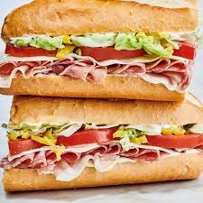

Sandwhich

Description
To make a delicious Sandwhich, start by gathering the following ingredients:
1/4 pound of turkey, 1 teaspoon of salt, 1/2 teaspoon of black pepper,
1 tablespoon of Worcestershire sauce, 1 clove of minced garlic, 2 hamburger
buns, and your favorite toppings such as lettuce, tomato, cheese, and condiments.
Begin by preheating grill or a skillet over medium-high heat. In a mixing bowl,
combine the ground beef, salt, pepper, Worcestershire sauce, and minced garlic.
Mix everything together until well combined, but avoid overmixing to maintain a
tender texture. Divide the mixture into four equal portions and shape them into
patties, slightly larger than the size of the buns.
ingredients
- 1/4 pound of turkey
- 1 teaspoon of salt
- 1 tablespoon of Worcestershire sauce
- 1 clove of minced garlic
- 2 hamburger buns
- your favorite toppings of choice
Steps for making the hamburger
- Begin by preheating a girll or skillet over medium-high heat
- In a mixing bowl mix everything together until well combined
- Put that miture on the Two patties
- Finally cook up and enjoy!